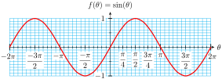

If we know one of the three trig values for an angle, we can find the other two by using these identities. Identities are useful for changing from one form to another when solving equations, and for finding exact values for trigonometric functions.
Are there identities relating the trig ratios of different angles?
For example, if we know the sine of \(27\degree\text{,}\) can we find the sine of \(2(27\degree)=54\degree\) without using a calculator? Or, if we know \(\cos (\alpha)\) and \(\cos (\beta)\text{,}\) can we calculate \(\cos (\alpha + \beta)\text{?}\)
SubsectionThe Sum of Angles Identities
All of the identities that relate the trig ratios of different angles are derived from the sum and difference formulas. Let’s see why we need these formulas.
are equal for any values of \(\alpha\) and \(\beta\) ? We can test this hypothesis by evaluating both expressions for some specific values of \(\alpha\) and \(\beta\text{,}\) say \(\alpha=45\degree\) and \(\beta=30\degree\text{,}\) as shown below.
From the figure, you should be able to see that \(\cos (75\degree)\) is in fact smaller than either \(\cos (45\degree)\) or \(\cos (30\degree)\text{,}\) so it cannot be true that \(\cos (75\degree)\) is equal to \(\cos (45\degree) + \cos 3(0\degree)\text{.}\)
Example8.1.
Verify that \(\cos (45\degree + 30\degree)\) is not equal to \(\cos (45\degree) + \cos (30\degree)\text{.}\)
Because the values of the expressions in the previous Example and Exercise are different, it is not true that \(\cos (\alpha + \beta)\) is equal to \(\cos (\alpha) + \cos (\beta)\) for all angles \(\alpha\) and \(\beta\text{,}\) or that \(\sin (\alpha + \beta)\) is equal to \(\sin (\alpha) + \sin (\beta)\text{.}\)
It turns out that there is a relationship between the trig ratios for \(\alpha + \beta\) and the trig ratios of \(\alpha\) and \(\beta\text{,}\) but it is a little more complicated.
Notice that to find the sine or cosine of \(\alpha + \beta\) we must know (or be able to find) both trig ratios for both and \(\alpha\) and \(\beta\text{.}\)
The sum and difference formulas can be used to find exact values for trig ratios of various angles.
Example8.4.
Find an exact value for \(\cos (105\degree)\text{.}\)
Solution.
We can write \(105\degree\) as the sum of two special angles: \(105\degree = 60\degree + 45\degree\text{.}\) Now apply the sum of angles identity for cosine.
Thus, \(\cos (105\degree) = \dfrac{\sqrt{2}-\sqrt{6}}{4}\text{.}\) You can check that your calculator gives the same decimal approximation of about \(-0.2588\) for both \(\cos (105\degree)\) and \(\dfrac{\sqrt{2}-\sqrt{6}}{4}\text{.}\)
Checkpoint8.5.
Find an exact value for \(\sin (75\degree)\text{.}\)
Answer.
\(\dfrac{\sqrt{6}+\sqrt{2}}{4}\)
Of course, the sum formulas hold for angles in radians as well as degrees.
Example8.6.
Suppose that \(\sin (\theta) = 0.6\) and \(\cos (\theta) = -0.8\text{.}\) Find an exact value for \(\sin\left(\theta + \dfrac{2\pi}{3}\right)\text{.}\)
Solution.
Recall that \(\sin \left(\dfrac{2\pi}{3}\right) = \dfrac{\sqrt{3}}{2}\) and \(\cos \left(\dfrac{2\pi}{3}\right) = \dfrac{-1}{2}\text{.}\) Substituting these values into the sum formula for sine, we find
Suppose that \(\sin (\theta) = \dfrac{-5}{13}\) and \(\cos (\theta) = \dfrac{12}{13}\text{.}\) Find an exact value for \(\cos\left(\dfrac{\pi}{4} + \theta\right)\text{.}\)
Suppose that \(\theta\) is a first-quadrant angle. In which quadrant would you find \(-\theta\text{?}\)
Sketch an example for \(\theta\text{,}\)\(-\theta\text{,}\) and the reference triangle for each.
How is \(\sin (-\theta)\) related to \(\sin (\theta)\text{?}\) What about \(\cos (-\theta)\) and \(\tan (-\theta)\text{?}\)
Repeat part (1) for the case where is a second-quadrant angle.
II Using Graphs
Look at the graph of \(f(\theta) = \sin (\theta)\text{,}\) and choose three positive values of \(\theta\text{.}\) Draw dots on the graph that show their function values.

Find the negatives of your three values of \(\theta\) from part (a), and draw dots to show their function values.
How do the values of \(\sin (-\theta)\) compare to the values of \(\sin (\theta)\text{?}\)
Repeat part (1) for the graph of \(f(\theta) = \cos (\theta)\text{.}\)
Repeat part (1) for the graph of \(f(\theta) = \tan (\theta)\text{.}\)
III Negative Angle Identities
State your conclusions from parts I and II as identities:
The difference formulas for sine and cosine can be derived easily from the sum formulas, using the identities for negative angles. Note that the difference formulas are identical to the corresponding sum formulas, except for the signs.
Use the fact that \(\dfrac{\pi}{12} = \dfrac{\pi}{4} - \dfrac{\pi}{6}\) to evaluate \(\cos\left( \dfrac{\pi}{12}\right)\) exactly.
Solution.
Remember that \(\cos \left( \dfrac{\pi}{4}\right) = \dfrac{\sqrt{2}}{2},~~\cos\left( \dfrac{\pi}{6}\right) =\dfrac{\sqrt{3}}{2},~~\sin\left( \dfrac{\pi}{4}\right) = \dfrac{\sqrt{2}}{2}\text{,}\) and \(\sin \left( \dfrac{\pi}{6}\right) = \dfrac{1}{2}\text{.}\) Substituting all these values into the difference formula for cosine, we obtain the following.
You can check that your calculator gives the same decimal approximation of about 0.9659 for both \(\cos \left( \dfrac{\pi}{12}\right)\) and \(\dfrac{\sqrt{6}+\sqrt{2}}{4}\text{.}\)
Find an exact value for \(\tan (75\degree)\text{.}\)
Solution.
We observe that \(75\degree = 45\degree + 30\degree\text{,}\) so \(\tan (75\degree) = \tan (45\degree + 30\degree)\text{.}\) We can apply the sum formula for tangent.
There are a number of other very useful identities that can be derived from the sum and difference formulas. In particular, if we set \(\alpha = \beta = \theta\) in the sum of angles identities (also called addition formulas), we obtain the double angle formulas. These identities are used frequently, so it is helpful to know them well.
You can also justify the identities to yourself by graphing both sides of the formula to see that the graphs are identical.
Caution8.12.
The first thing we can learn from the double angle formulas is that \(\sin (2\theta)\) is not equal to \(2\sin (\theta)\text{!}\) You can check this very easily by choosing a value for \(\theta\text{,}\) say \(45\degree\text{.}\) Then
so \(c = \sqrt{13}\text{.}\) Thus, \(\cos (\theta) = \dfrac{3}{\sqrt{13}}\) and \(\sin (\theta) = \dfrac{2}{\sqrt{13}}\text{.}\) Now we can use these values in the double angle identity to find \(\sin (2\theta)\text{.}\)
Once we have all the trig functions in terms of a single angle, we try to write the equation in terms of a single trig function. In this case, we can factor the left side to separate the trig functions.
There are four solutions, \(x = \dfrac{\pi}{2},~\dfrac{3\pi}{2},~\dfrac{\pi}{6},\) and \(\dfrac{5\pi}{6}\text{.}\)
Checkpoint8.20.
Solve \(~~\cos (2t) = \cos t~~\) for \(0 \le x \le 2\pi\text{.}\)
Answer.
\(t = 0,~ \dfrac{2\pi}{3},~\dfrac{4\pi}{3}\)
Activity8.2.Identities.
I Sum of Angles Identities
Is it true that \(\cos (\theta + \phi) = \cos (\theta) + \cos (\phi)\text{?}\) Try it for \(\theta = 60\degree\) and \(\phi = 45\degree\text{.}\)
Recall the distributive law, \(a(b+c) = ab + ac\text{,}\) where the parentheses denote multiplication. Is the same law true when the parentheses denote a function? In other words, is it true that \(f(a+b) = f(a) + f(b)\text{?}\)
In the expression \(\sin (\theta + \phi)\text{,}\) do the parentheses denote multiplication or the application of a function? Does the distributive law apply to \(\sin (\theta + \phi)\text{?}\) Do you think that \(\sin (\theta + \phi) = \sin (\theta) + \sin (\phi)\) is an identity?
Look at the Sum of Angles Identities in this section. Make some observations that will help you memorize these formulas.
Do you think you would have to memorize these formulas if the equation \(\sin (\theta + \phi) = \sin (\theta) + \sin (\phi)\) were an identity?
II Difference of Angles Identities, Tangent Identities
Yikes! More formulas. Compare the Difference of Angles Identities with the Sum of Angles Identities. If you have memorized the Sum formulas, how can you also memorize the Difference formulas?
Comment on the sign patterns in the Sum and Difference Identities for Tangent.
Now let’s use the formulas backwards: look at the expression below:
Is it true that \(\sin (2\theta) = 2\sin (\theta)\text{?}\) Choose a value for \(\theta\) and try it. Sketch \(\theta\) and \(2\theta\) on a unit circle and show the sine of each.
Is it true that \(\cos (2\theta) = 2\cos (\theta)\text{?}\) Repeat part (a) for cosine.
Substitute \(\alpha = \theta\) and \(\beta = \theta\) into the sum of angles formulas for sine, cosine, and tangent to derive the double angle formulas.
Choose one of the three forms of the Double Angle Identity for Cosine. Use the Pythagorean Identity to convert from that form to each of the other two forms.
Review the following skills you will need for this section.
Algebra Refresher8.3.
Compute \(f(2),~ f(3)\text{,}\) and \(f(2+3)\text{.}\)
For which of the following functions is it true that \(f(a+b) = f(a) + f(b)\) whenever the function values are defined?
Identities are useful for changing from one form to another when solving equations, for simplifying expressions, and for finding exact values for trigonometric functions.
it is not true in general that \(\cos (\alpha + \beta)\) is equal to \(\cos (\alpha) + \cos (\beta)\) for all angles \(\alpha\) and \(\beta\text{,}\) or that \(\sin (\alpha + \beta)\) is equal to \(\sin (\alpha) + \sin (\beta)\text{.}\)
Explain why \(f(a+b) = f(a) + f(b)\) is not a valid application of the distributive law.
Delbert says that \(\sin\left(\theta + \dfrac{\pi}{6}\right) = \dfrac{1}{2} + \sin (\theta)\text{.}\) Is he correct? Explain.
Francine says that \(\tan\left(\theta + \dfrac{\pi}{4}\right)= \dfrac{1+\tan (\theta)}{1 - \tan (\theta)}\text{.}\) Is she correct? Explain.
Provide an example to show that doubling an angle does not double its sine or cosine.
SubsubsectionSkills
Find trig values for the negative of an angle #1–6
Verify or disprove possible formulas #7–12, 31–42, 73–76, 79–88
Find exact values for trigonometric functions #13–24, 55–62
Simplify or expand expressions #25–30, 43–54
Solve equations #63–72
Prove standard identities #77–78, 89–91
ExercisesHomework 8-1
1.
Sketch an angle \(\alpha\) in standard position, with \(\dfrac{\pi}{2} \lt \alpha \lt \pi\text{.}\) Also sketch the angle \(-\alpha\text{.}\)
Choose a point on the terminal side of \(\alpha\text{,}\) and show that the negative angle identities hold for \(\alpha\text{.}\)
2.
Sketch an angle \(\beta\) in standard position, with \(\pi \lt \beta \lt \dfrac{3\pi}{2}\text{.}\) Also sketch the angle \(-\beta\text{.}\)
Choose a point on the terminal side of \(\beta\text{,}\) and show that the negative angle identities hold for \(\beta\text{.}\)
3.
Given that \(~~\sin \left(\dfrac{7\pi}{12}\right) = \dfrac{\sqrt{2} + \sqrt{6}}{4}~~\text{,}\) find \(\sin \left(\dfrac{-7\pi}{12}\right)\text{.}\) Sketch both angles.
4.
Given that \(~~\cos \left(\dfrac{7\pi}{12}\right) = \dfrac{\sqrt{2} - \sqrt{6}}{4}~~\text{,}\) find \(\cos \left(\dfrac{-7\pi}{12}\right)\text{.}\) Sketch both angles.
5.
If \(~~\cos(2x-0.3)=0.24~~\) and \(~~\sin(2x-0.3) \lt 0~~\text{,}\) find \(\cos(0.3-2x)\) and \(\sin(0.3-2x)\text{.}\)
6.
If \(~~\sin(1.5-\phi)=-0.28~~\) and \(~~\cos(1.5-\phi) \gt 0~~\text{,}\) find \(\sin(\phi-1.5)\) and \(\cos(\phi-1.5)\text{.}\)
7.
Show that \(\cos(45\degree+45\degree)\) is not equal to \(\cos (45\degree) + \cos (45\degree)\text{.}\)
8.
Show that \(\tan(60\degree-30\degree)\) is not equal to \(\tan (60\degree) - \tan (30\degree)\text{.}\)
9.
Use your calculator to verify that \(\tan (87\degree-29\degree)\) is not equal to \(\tan (87\degree) - \tan (29\degree)\text{.}\)
10.
Use your calculator to verify that \(\cos (52\degree+64\degree)\) is not equal to \(\cos (52\degree) + \cos (64\degree)\text{.}\)
11.
Use graphs to show that \(\sin\left(x-\dfrac{\pi}{6}\right)\) is not equivalent to \(\sin (x) - \sin\left(\dfrac{\pi}{6}\right)\text{.}\)
12.
Use graphs to show that \(\tan\left(x+\dfrac{\pi}{4}\right)\) is not equivalent to \(\tan x + \tan\dfrac{\pi}{4}\text{.}\)
Exercise Group.
For Problems 13–24, find exact values for the trig ratios. (Do not use a calculator!)
If \(\tan (t) = \dfrac{3}{4}\) and \(\tan (s) = \dfrac{-7}{24}\text{,}\) find exact values for:
\(\displaystyle \tan(s+t)\)
\(\displaystyle \tan(s-t)\)
16.
If \(\tan (x) = -3\) and \(\tan (y) = -5\text{,}\) find exact values for:
\(\displaystyle \tan(x+y)\)
\(\displaystyle \tan(x-y)\)
17.
Suppose \(\cos (\theta) = \dfrac{15}{17}\) and \(\sin (\phi) = \dfrac{3}{5}\text{,}\) where \(\theta\) and \(\phi\) are in quadrant I. Evaluate the following.
\(\displaystyle \cos(\theta + \phi)\)
\(\displaystyle \tan(\theta - \phi)\)
18.
Suppose \(\cos (\theta) = \dfrac{15}{17}\text{,}\) where \(\theta\) is in quadrant IV, and \(\sin (\phi) = \dfrac{3}{5}\text{,}\) where \(\phi\) is in quadrant II. Evaluate the following.
Prove the double angle identity \(\sin (2\theta) = 2\sin (\theta) \cos(\theta)\text{.}\) (Hint: Start with the sum of angles formula for sine and replace both \(\alpha\) and \(\beta\) by \(\theta\text{.}\))
78.
Prove the double angle identity \(\cos (2\theta) = \cos^2 (\theta) - \sin^2 (\theta)\text{.}\) (Hint: Start with the sum of angles formula for sine and replace both \(\alpha\) and \(\beta\) by \(\theta\text{.}\))
Exercise Group.
For Problems 79–88,
Use graphs to decide if the equation is an identity.
If the equation is not an identity, find a value of the variable that makes the equation false.
Write an expression for \((AB)^2\text{,}\) the square of the distance between the points \(A\) and \(B\text{,}\) using the Law of Cosines for \(\triangle AOB\text{.}\)
Write another expression for \((AB)^2\) using the distance formula and the coordinates of \(A\) and \(B\text{.}\)
Equate the two expressions for \((AB)^2\) you obtained in (a) and (b). Simplify the equation to obtain \(\cos(\alpha - \beta) = \cos(\alpha) \cos(\beta) + \sin(\alpha) \sin(\beta)\text{.}\)